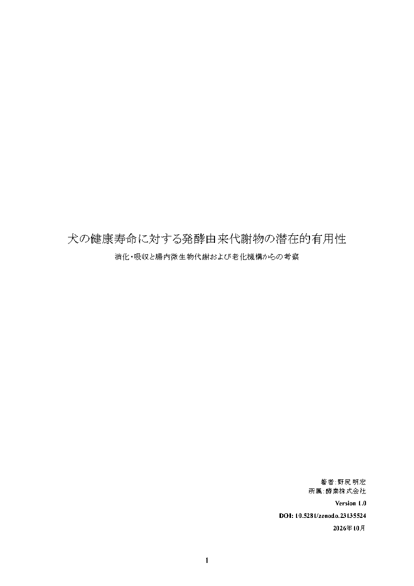

犬の栄養代謝には、
微生物も関わっている。
食物繊維や難消化性成分の一部は大腸へ到達し、腸内細菌によって酢酸・プロピオン酸・酪酸などの短鎖脂肪酸へ変換されます。犬自身の消化・吸収に加え、腸内微生物による代謝という経路があります。
KOUSO RESEARCH
REPORT 01 ／ OCTOBER 2026
犬の健康寿命 × 発酵科学
消化・吸収と腸内微生物代謝および
老化機構からの考察
食べたものを、体で使えるものへ。
犬自身の消化と、微生物による変換。
その接点から、健康に生きる時間を考える。
01 / INTRODUCTION
自分で食べる。自分で歩く。自分で排泄する。
家族と一緒に、穏やかな時間を過ごす。
こうした生活をできる限り長く維持することが、犬の「健康寿命」を考える上で重要だと私たちは考えています。犬の平均寿命は長期的には延び、高齢期の健康をどう支えるかが、ますます大切になっています。
その基本の一つが、毎日の食事です。ただし、食品に栄養成分が含まれていることと、その成分が実際に犬の体で利用されることは同じではありません。
さらに、犬自身が消化できなかった一部の成分は、腸内微生物によって短鎖脂肪酸などの物質へ変換されます。この「微生物による変換」に着目したことが、本レポートの出発点です。
本レポートでは、犬の消化・吸収、腸内細菌による発酵、老化のメカニズムを整理し、発酵由来代謝物が犬の健康維持や健康寿命にどのような可能性を持つのかを、既存研究から考察しました。
KEY POINTS
食物繊維や難消化性成分の一部は大腸へ到達し、腸内細菌によって酢酸・プロピオン酸・酪酸などの短鎖脂肪酸へ変換されます。犬自身の消化・吸収に加え、腸内微生物による代謝という経路があります。
「腸内で発酵する」ことと「発酵させたものを食べる」ことは同じではありません。体外発酵は、摂取前に微生物の代謝能力を利用して食品の化学組成を変える工程です。作用部位や吸収動態も異なり得ます。
一部の微生物由来代謝物は、腸管バリア、免疫、炎症、エネルギー代謝などと関係します。一方、犬の健康寿命そのものの延伸を示す直接的な長期エビデンスは、本稿の検討範囲では確認できていません。
WHAT ARE FDMs?
発酵とは、微生物が原料中の成分を利用し、別の化学物質へ変換する生命現象です。本レポートでは、微生物の発酵・代謝によって生じる化合物群を、発酵由来代謝物（Fermentation-Derived Metabolites：FDM）として扱っています。
何が生成されるかは、原料や微生物、発酵条件などによって異なります。「FDM」という名称だけで、健康上の利益を意味するものではありません。
発酵の価値を考えるには、「発酵した」という事実の先を調べる必要があります。
02 / THREE PATHWAYS
犬自身の消化、腸内での微生物代謝、そして摂取前の発酵。それぞれの違いを整理します。
PATHWAY 01 / DIGESTION
PATHWAY 02 / IN THE GUT
PATHWAY 03 / BEFORE INTAKE
概念図：主な流れを簡略化して示しています。成分によって吸収・輸送・作用部位は異なります。
食品成分を摂取前に微生物によって変換する、異なる栄養経路として捉える必要があります。発酵由来代謝物の摂取は、食物繊維の摂取を代替するものでもありません。
AGING × FERMENTATION
犬の老化は、一つの原因だけで進むわけではありません。ミトコンドリア機能、免疫、炎症、酸化ストレス、腸管バリア、腸内細菌叢、遺伝子発現の調節など、複数の恒常性維持機構が変化していきます。
発酵由来代謝物の中でも比較的研究が進んでいる短鎖脂肪酸には、これらの一部と生物学的な接点があります。
| 関連する領域 | 主な接点 |
|---|---|
| 腸管バリア | 酪酸などと腸上皮機能 |
| 免疫 | SCFA受容体、免疫細胞との相互作用 |
| 慢性炎症 | 炎症シグナルとの関連 |
| エネルギー代謝 | SCFAのエネルギー基質としての利用 |
| 酸化還元状態 | 発酵由来成分との関連 |
| エピジェネティクス | 一部SCFAによるHDAC（ヒストン脱アセチル化酵素）の調節 |
| 腸内細菌叢 | 微生物と代謝物の双方向関係 |
| 健康寿命 | 直接的な長期証拠はまだ不足 |
犬以外の動物・人・細胞・in vitro（試験管内）研究に基づく機序の知見を含みます。各機序が犬で同じ程度に実証されていることを意味しません。出典と研究対象の詳細はレポート第5・6・8章をご覧ください。
03 / EVIDENCE
犬での観察研究、短期の介入研究、他の動物種から得られた知見。それぞれを同じ強さの証拠として扱わず、研究が示した範囲を区別します。
WHAT WE KNOW
複合製剤の結果を、個々のFDM単独の効果へ帰属することはできません。
WHAT WE DON'T KNOW YET
ここでの整理は、2026年10月公開のレポート v1.0が検討した文献に基づきます。
04 / FUTURE RESEARCH
原料と発酵後を比較し、何が増え、何が減り、何が新たに生成されたのかを同定・定量する。
胃酸、消化酵素、胆汁などを経ても、どの成分が残るのかを確認する。
血液、尿、便などを分析し、摂取した成分がどこへ到達し、どのように利用・排泄されるのかを調べる。
腸内細菌、代謝物、炎症、免疫、腸管バリア、酸化ストレスなどへの作用を評価する。
活動量、筋肉量、フレイル、認知機能、疾病発症、QOLなどを追跡する。
最終的に、健康な状態を維持できる期間そのものが延びるのかを検証する。
本レポートが提案する検証の流れです。実施済み、または実施が決定した研究計画を示すものではありません。
OUR RESEARCH POLICY
「発酵」という言葉には、健康的なイメージがあります。しかし私たちは、「発酵しているから良い」という考え方だけでは不十分だと考えています。
何を発酵したのか。どの微生物が関与したのか。何が生成され、どの程度含まれ、犬の体でどのように利用されるのか。一つずつ確認することが必要です。
「発酵した」という事実の先にある、
「発酵によって何が変わったのか」を
科学的に考える。
これを、酵素株式会社の研究・商品開発における一つの基本姿勢としていきます。
CONCLUSION
本稿で検討した知見を総合すると、発酵由来代謝物が犬の健康維持に寄与するという仮説には、生物学的な妥当性があると考えられます。短鎖脂肪酸などの一部の物質は、腸管バリア、免疫、炎症、酸化還元状態、エネルギー代謝といった、健康維持や老化に関わる複数の生理機構と接点を持っています。
一方、継続的な摂取によって犬の老化速度が低下し、健康寿命そのものが延長することを示す直接的な長期エビデンスは、現時点では十分ではありません。発酵によって実際に何が生成・変換され、その成分が犬の体内でどう利用されるのかを明らかにする必要があります。
人と犬には、消化生理、代謝、寿命、腸内環境などに違いがあります。人で得られた知見をそのまま当てはめず、犬という動物種に基づいた研究を積み重ねることが重要です。
発酵は、微生物の代謝能力によって食物を新たな形へ変換する生命現象です。その力を科学的に理解し、適切に活用することによって、
食べ、歩き、家族とともに過ごす。
その豊かで幸せな時間を、
少しでも長く維持できる未来へ。
それが、本研究を通じて目指したい方向です。
05 / FULL REPORT

RESEARCH REPORT / NARRATIVE REVIEW
消化・吸収と腸内微生物代謝および老化機構からの考察
本稿は、公開されている既存研究をもとに著者が整理・考察したナラティブレビュー／研究レポートです。網羅的な系統的レビューや、査読付き学術誌に掲載された原著論文ではなく、特定の製品の有効性や健康寿命延伸効果を検証した臨床試験でもありません。
著者は、発酵食品・ペット向け健康食品等を扱う酵素株式会社に所属しています。そのため本稿では、直接的な犬の研究と、人・実験動物・細胞・in vitro研究から得られた知見を可能な限り区別し、確認されている事実と仮説を分けて記載することを重視しています。
このページは上記レポート v1.0をもとにした概要です。［ ］内の番号は、レポート本文の参考文献番号と対応しています。